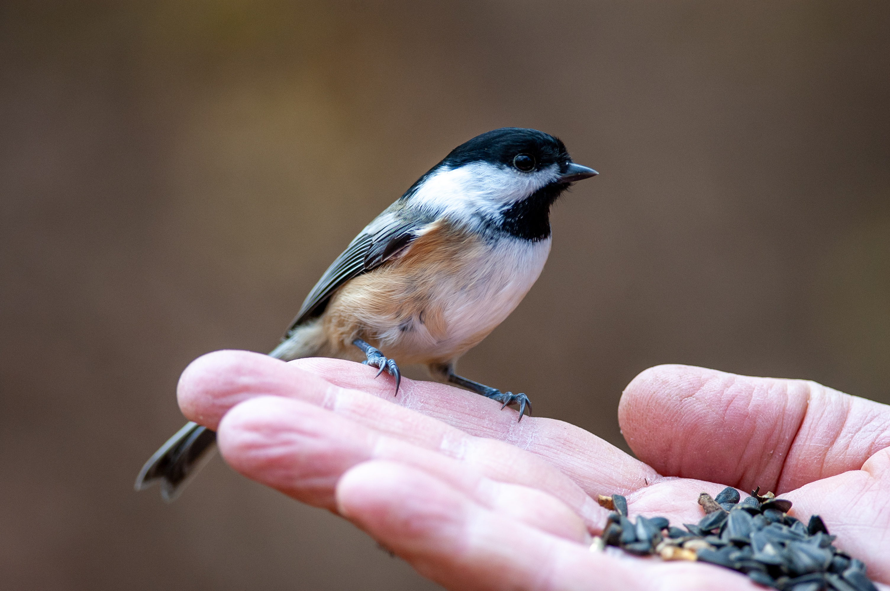

<!DOCTYPE html>
<html lang="" en-us></html>
<head>
  <meta charset="utf-8" />
  <meta name="viewport" content="initial-scale=1.0, user-scalable=yes" />
  <title>Global Kormin News</title> <!--General Code-->
</head>
<body>
  <header>
    <h1>
      <b>
        <u>Global Kormin News</u> <!--Page title-->
      </b>
    </h1>
  </header>
  <main>
    <p>
      Welcome to the News Hub, where your Kormin Governing Force has selected
      only the most accurate and relevant news thanks to our associates at GKN.
      <hr/>
    </p> <!--Opening paragraph-->
  </main>
  <article>
    <h3>
      <b>BREAKING NEWS: Kormaxes Harassed By Mysterious "Helping Hand"</b> <!--Title-->
    </h3>
     <!--Image-->
    <p><sup>StockSnap.io</sup></p> <!--Credits-->
    <hr/>
    <p><b>A mysterious "Helping Hand" has been reportedly wreaking havoc
      upon the Kormaxes.</b> The origins of this "Helping Hand" are unknown, but Kormin Reportants
      posted in the far north have questioned our cousin Kormax victims about the attacks.<br/>
      <i>"I never felt so terrified before in my short life!"</i><br/>Says Wikiwakalaka, a Kormax
      victim of the Hand.<br/><i>"I was lost when me and my friend Wakilamuka were adventuring.
      Then this scary humanoid came out of nowhere and flung me through the sky! Good thing
      I landed near Wakilamuka."</i><br/>The mysterious humanoid calls itself the "Helping Hand".
      We suggest all Kormaxes currently living in the Kormin Territories to stay indoors.<br/>
      <sup>-GKN Kormin Reportant Sold-My-Soul</sup></p> <!--Article-->
    <hr/>
  </article>
  <article>
    <h3>
      <b
        >Kormaxes Attempt To Begin War Against The Northern Kormins Due To "Ally
        Fraud"</b 
      >
    </h3> <!--Title-->
     <!--Image-->
    <p><sup>freenaturestock.com</sup></p> <!--Credits-->
    <hr/>
    <p><b>Maker-Kormin Swam-The-Seas from the North End has informed us of
      Kormax attempts to sue for "Ally Fraud", with threats of war.</b>
      <br/>Reportedly, the Kormax have been under attack by terrorist-beast 
      "Helping Hand", and have decided to call phony on the Kormin Governing Force for
      "Ally Fraud". Major Lakiluka of the Kormaxes believes the Kormins need to
      aid them in the capture of this <i>Hand</i>. The KGF's refusal to become
      associated, likely due to fear of the Hand's intentions, has caused anger
      from Lakiluka. Whether this will result in war or court is yet to be determined.
      <br/><sup>-GKN Kormin Reportant Parried-A-Blow</sup></p> <!--Article-->
      <hr/>
  </article>
  <article>
    <h3>
      <b
        >Kormin Governing Force Declares Project Dominion-Over-Mankind
        Near-Completion</b
      >
    </h3> <!--Title-->
     <!--Image-->
    <p><sup>StockSnap.io</sup></p> <!--Credits-->
    <hr/>
    <p><b>The Kormin Governing Force has delared their level-10 project near completion.</b><br/>
      The mysterious solution to our human infestation has been a secret for many centrums.
      Now, Myriad Praised-Twenty-Stars has informed us here at the GKN of their plan.<br/>
      <i>"I am pleased to inform our loyal Kormin citizens of the near-completion of our
      top-secret Project Dominion-Over-Mankind. We have been hard at work completing
      the cosmic designs of our forebearers, and finally, after <b>centrumys</b> of oppression,
      we have a solution to our, human infestation. Construction is almost complete, and on
      next OdeDay, we shall announce our plans for the human collective."</i><br/>
      <b>May the Kormins stand taller-than-our-tall-fellows and conquer the stars!</b><br/>
      <sup>-GKN Head Danced-For-Days</sup></p> <!--Article-->
      <hr/>
  </article>
  <footer>
    <a href="index.html">Kormin Homepage</a>
    <a href="market.html">Marketplace</a>
    <a href="calendar.html">Calendar</a>
    <!--Navigation-->
  </footer>
</body>
